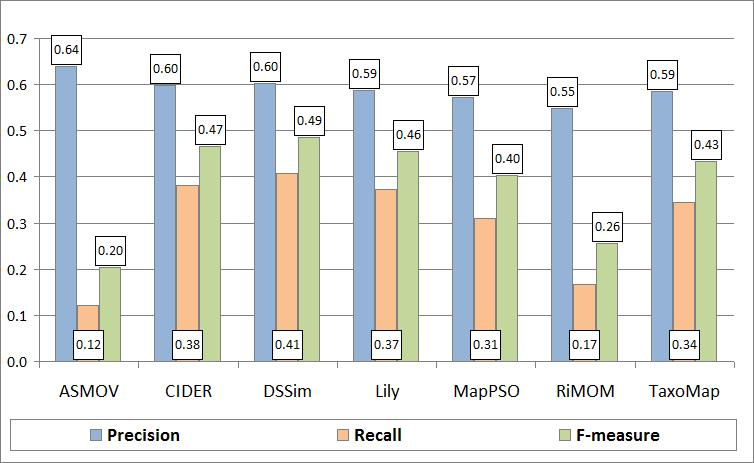
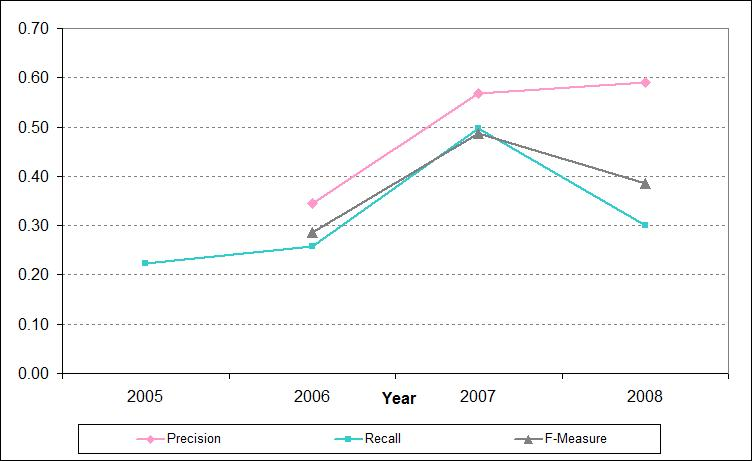
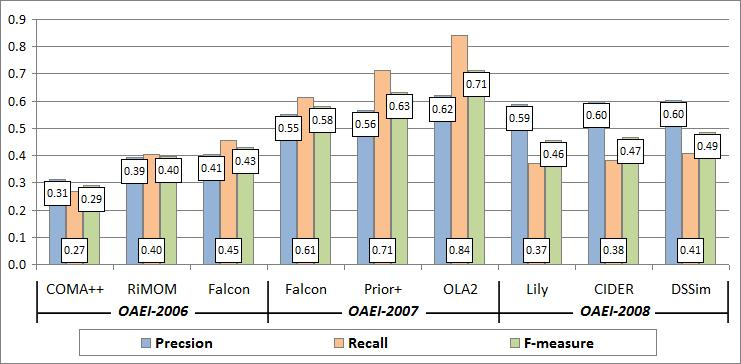
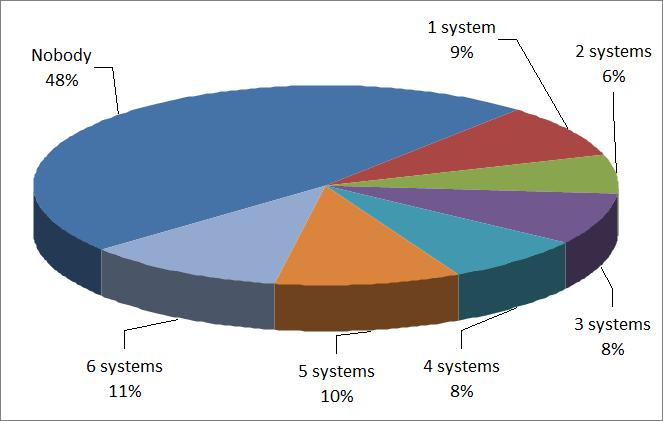
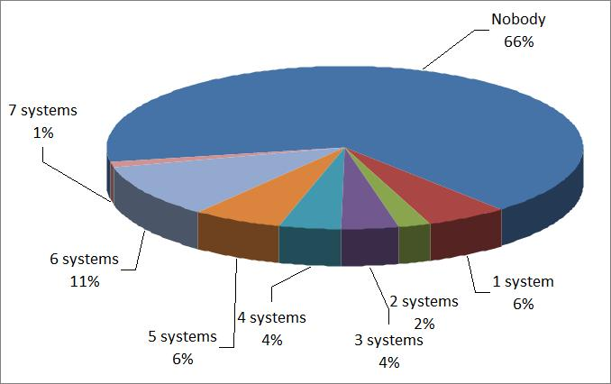

This test case aims at providing a challenging task for ontology matching systems in the domain of large directories. The test case set up is provided here.
In OAEI-2008, 7 out of 13 matching systems participated on the web directories dataset, while in OAEI-2007, 9 out of 18, in OAEI-2006 - 7 out of 10 and in OAEI-2005 - 7 out of 7.
Precision, Recall and F-measure results of the systems on the web directories test case are shown in Figure 1. These indicators have been computed following the TaxMe2 methodology, with the help of Alignment API, version 3.4.

Figure 1: Matching quality results.
Let us make several observations concerning quality of the results for the participating systems. In particular, we can observe from Table 1, that all the systems that participated in the directory track in 2007 and 2008 (ASMOV, DSSim, Lily and RiMOM), have increased their Precision values. Considering Recall, we can see that in general the systems that had participated in 2007 and 2008 directory tracks, have decreased their values, the only system that increased it's Recall values is DSSim. In fact, DSSim is the system with the highest F-measure value in 2008.
Table 1 shows that in total 21 matching systems have participated during the 4 years (2005 - 2008) of the OAEI campaign in the directory track. No single system has participated in all the web directories dataset track. A total of 14 systems have participated only one time in the evaluation, 5 systems have participated 2 times, and only 2 systems have participated 3 times. The systems that have participated in 3 evaluations are Falcon (2005, 2006 and 2007) and RiMoM (2006, 2007, 2008), the former with a constant increase in the quality of the results, the later with a constant increase in Precision, but in the last evaluation (2008) Recall dropped significantly from 71% in 2007, to 17% in 2008. As already mentioned, almost all the participating systems have experienced a decrease in Recall.
Table 1. Summary of submissions by year.
| # | Matching System | Recall | Precision | F-measure | |||||||||
| 2005 | 2006 | 2007 | 2008 | 2005 | 2006 | 2007 | 2008 | 2005 | 2006 | 2007 | 2008 | ||
| 1 | ASMOV | 0.44 | 0.12 | 0.59 | 0.64 | 0.50 | 0.20 | ||||||
| 2 | automs | 0.15 | 0.31 | 0.20 | |||||||||
| 3 | CIDER | 0.38 | 0.60 | 0.47 | |||||||||
| 4 | CMS | 0.14 | |||||||||||
| 5 | COMA | 0.27 | 0.31 | 0.29 | |||||||||
| 6 | ctxMatch2 | 0.09 | |||||||||||
| 7 | DSSim | 0.31 | 0.41 | 0.60 | 0.60 | 0.41 | 0.49 | ||||||
| 8 | Dublin20 | 0.27 | |||||||||||
| 9 | Falcon | 0.31 | 0.45 | 0.61 | 0.41 | 0.55 | 0.43 | 0.58 | |||||
| 10 | FOAM | 0.12 | |||||||||||
| 11 | hmatch | 0.13 | 0.32 | 0.19 | |||||||||
| 12 | Lily | 0.54 | 0.37 | 0.57 | 0.59 | 0.55 | 0.46 | ||||||
| 13 | MapPSO | 0.31 | 0.57 | 0.40 | |||||||||
| 14 | OCM | 0.16 | 0.33 | 0.21 | |||||||||
| 15 | OLA/OLA2 | 0.32 | 0.84 | 0.62 | 0.71 | ||||||||
| 16 | OMAP | 0.31 | |||||||||||
| 17 | OntoDNA | 0.03 | 0.55 | 0.05 | |||||||||
| 18 | Prior/Prior+ | 0.24 | 0.71 | 0.34 | 0.56 | 0.28 | 0.63 | ||||||
| 19 | RiMOM | 0.40 | 0.71 | 0.17 | 0.39 | 0.44 | 0.55 | 0.40 | 0.55 | 0.26 | |||
| 20 | TaxoMap | 0.34 | 0.59 | 0.43 | |||||||||
| 21 | X-SOM | 0.29 | 0.62 | 0.39 | |||||||||
| Average | 0.22 | 0.26 | 0.50 | 0.30 | 0.35 | 0.57 | 0.59 | 0.29 | 0.49 | 0.39 | |||
| Number of participants | 7 | 7 | 9 | 7 | 0 | 7 | 9 | 7 | 0 | 7 | 9 | 7 | |
As can be seen in Figure 2 and Table 1, there is an increase in the average Precision for directory tack of 2008, along with a decrease in the average Recall. This behavior evidence the clear trade-off between Precision and Recall, this is, if a system wants to generate more correct results (increase Precision), it will most likely loose completeness of the results (decrease Recall). Notice that in 2005 the dataset allowed only the estimation of Recall, therefore Figure 2 and Table 1 do not contain values of Precision and F-measure for 2005.

Figure 2: Average results by year.
A comparison of the results in 2006, 2007 and 2008 for the top-3 systems of each year based on the highest values of the F-measure indicator is shown in Figure 3. The key observation here is that unfortunately the top-3 systems of 2007 did not participate in the directory track this year, therefore, the top-3 systems for 2008 is a new set of systems (Lily, CIDER and DSSim). From these 3 systems, CIDER is a newcomer, but Lily and DSSim had also participated in the directory track 2007, where they were not included in the top-3 list.
The quality of the best F-measure result of 2008 (0.49) demonstrated by DSSim is lower than the best F-measure quality in 2007 (0.71) by OLA2. The best Precision result of 2008 (0.64) demonstrated by ASMOV is higher than the results obtained in 2007 (0.62) by both OLA2 and X-SOM. Finally, for what concerns Recall, the best result of 2008 (0.41) demonstrated by DSSim is also lower than the best results obtained in 2007 (0.84) obtained by OLA2.
This decrease in the maximum values achieved by the participating systems can be understood if we consider that all participants, for the different OAEI-2008 tracks, should use the same configuration parameters for the different tracks they wish to participate. As a direct consequence, a system can aim to tune its parameters for a specific track, therefore decreasing their performance in the other tracks. For example, we can observe that both ASMOV and Lily have very good results (over 90% F-measure) for the Benchmark-2008 track, which are higher than the Benchmarck-2007 track.

Figure 3: Comparison of matching quality results in 2006, 2007 and 2008.
Partitions of positive and negative correspondences according to the system results are presented in Figure 4 and Figure 5, respectively.

Figure 4: Partition of the system results on positive correspondences.
Figure 4 shows that the systems managed to discover only 52% of the total number of positive correspondences (Nobody = 48%). Only 11% of positive correspondences were found by almost all (6) matching systems. This high percentage of positive correspondences not found by the systems correspond to the low Recall values we observe in Table 1, which are the cause of the decrease in average Recall from 2007 to 2008. Figure 5 shows that most of the negatives correspondences were not found by the systems (correctly). The Figure also shows that all (6) systems found 11% of negative correspondences, i.e., mistakenly returned them as positive. The last two observations suggest that the discrimination ability of the dataset still remains high in comparison with the results obtained in 2007.

Figure 5: Partition of the system results on negative correspondences.
An important observation from this evaluation is that the ontology matching community is still making progress on the web directories task this year, considering Precision, but at expense of Recall as can be seen in Figure 2. This suggests that the systems experience a higher number of difficulties on the test case, in comparison to 2007, which means that there is still room for further improvements, specially in Recall. A considerable remark this year is that is hard for a single system to perform well in all the situations when finding correspondences is needed (which are simulated by the different OAEI tracks); this suggests that a general purpose matching system is noticeably difficult to construct. Finally, as partitions of positive and negative correspondences indicate (see Figure 4 and Figure 5), the dataset still retains good discrimination ability as in 2007, i.e., different sets of correspondences are still hard for the different systems.
Initial location of this page: http://www.disi.unitn.it/~pane/OAEI/2008/directory/result/.